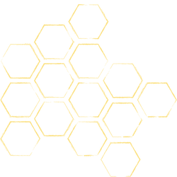

Nazywam się Wojciech Kajewski i
O przejściu do branży IT i programowaniu rozmyślałem wielokrotnie na przestrzeni kilku lat. Lecz w poprzedniej pracy z powodzeniem rozwijałem się oraz odnosiłem sukcesy, co utrudniało mi podjęcie decyzji o tak ogromnej zmianie. Jednak pracując odkryłem, że nie ma dla mnie rzeczy niemożliwych. Zawsze patrzę na problemy jako na wyzwania, a wyzwania jako możliwość nauki czegoś nowego.
Mimo iż podczas mojej pracy w turystyce, nie zdobyłem doświadczenia w programowaniu, od zawsze byłem zafascynowany tą dziedziną i interesowałem się nią od dawna, zdobywając wiedzę na ten temat w czasie wolnym oraz realizując małe projekty stawiania stron www dla swoich bliskich co umożliwiło mi rozwinięcie umiejętności w obszarze HTML i CSS.
Obecnie rozwijam swoje umiejętności programując w JavaScript.
